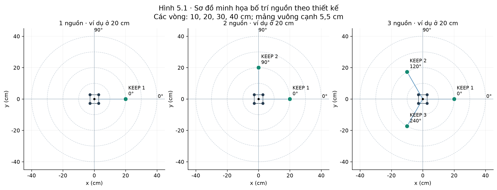
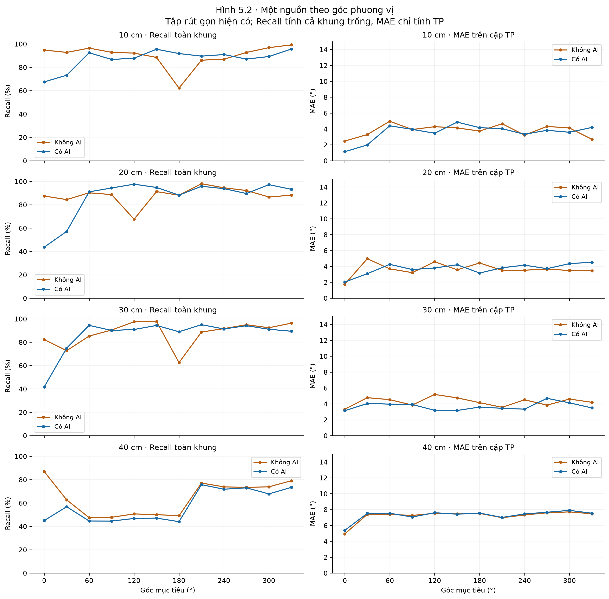
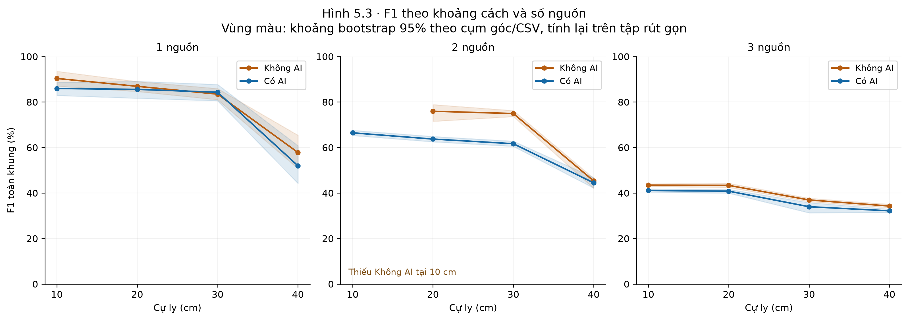
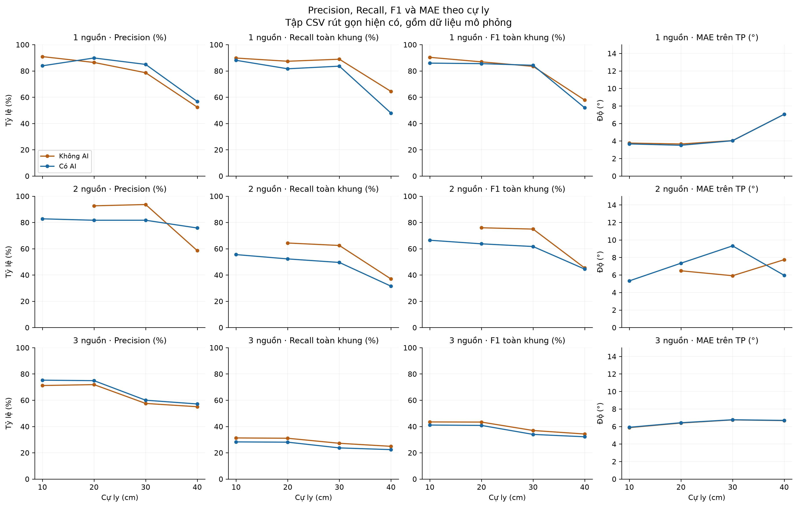
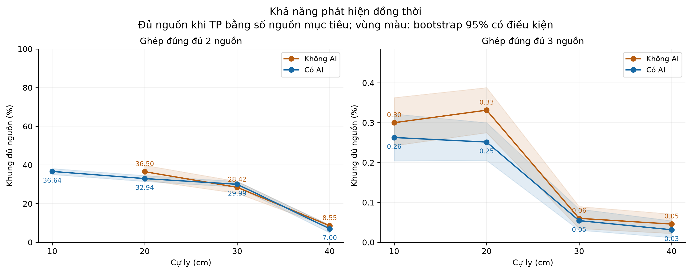
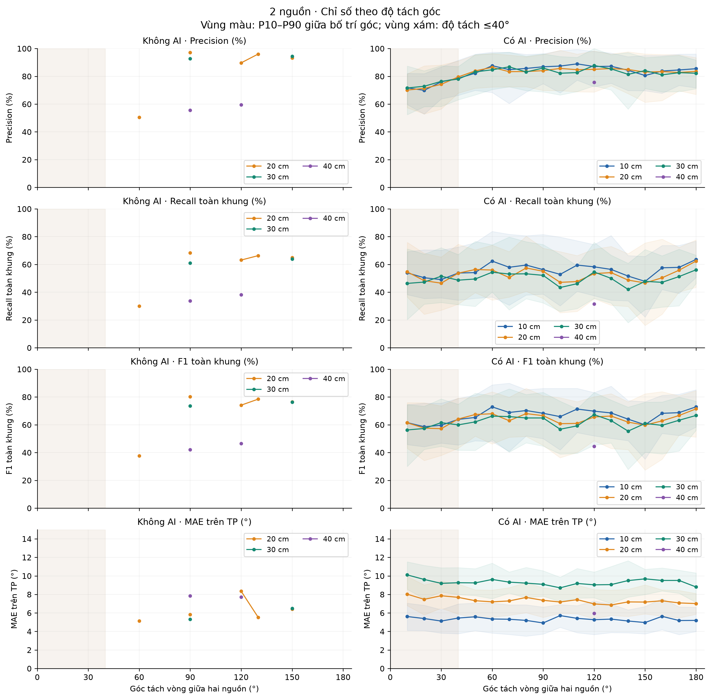
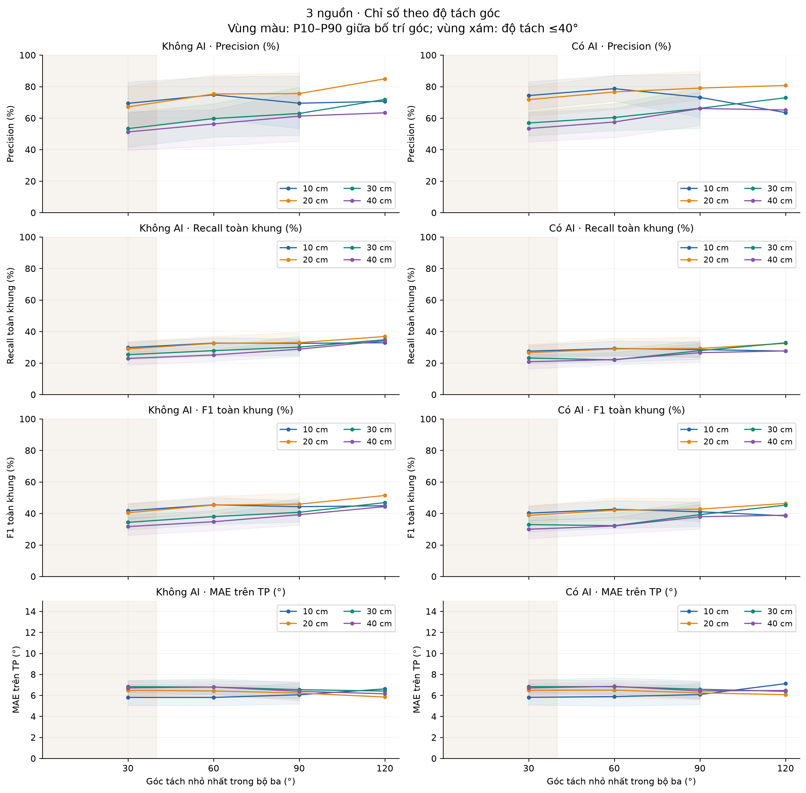
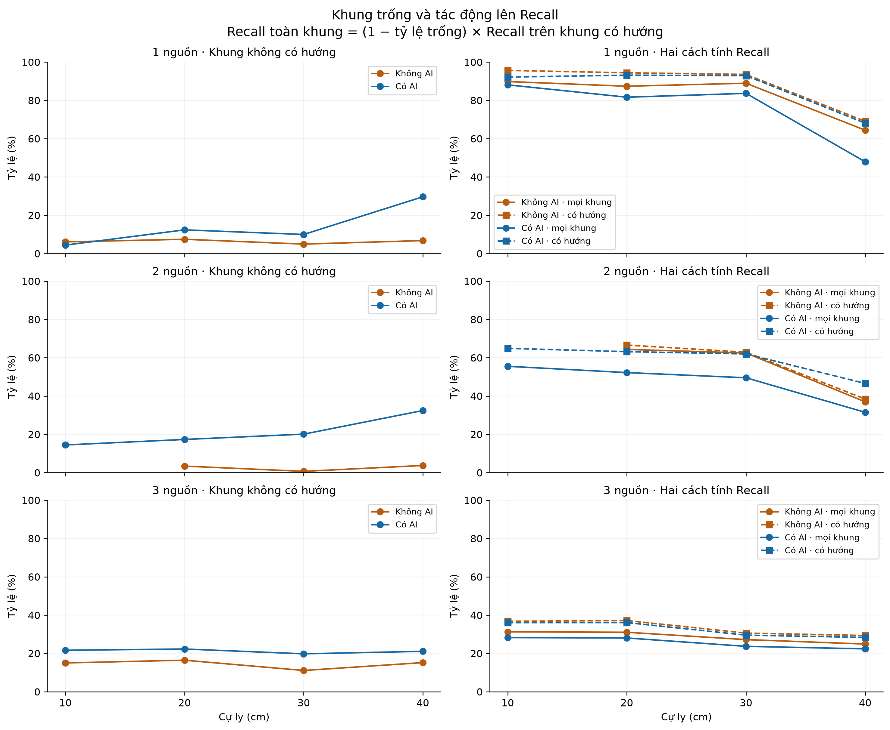
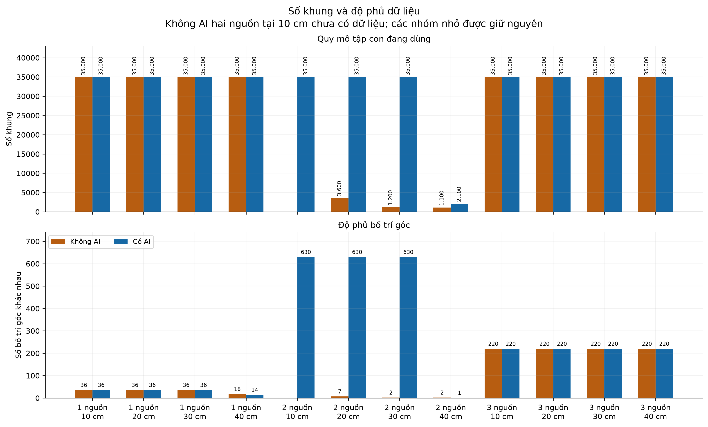

Màu cam: Không AI; xanh lam: Có AI. Với biểu đồ tách góc, màu phân biệt cự ly theo chú giải. R/F1 chính tính cả khung trống; MAE chỉ tính TP trong 15°.
Hình 5.1 · Sơ đồ bố trí nguồn

Sơ đồ theo thiết kế, không phải ảnh hoặc hồ sơ xác nhận bố trí đã đo. Minh họa 0° theo +x và 90° theo +y; cần đối chiếu quy ước lắp đặt thực tế. Ba ví dụ cùng cự ly 20 cm.
Hình 5.2 · MAE và Recall theo góc

Tập CSV hiện có gồm mô phỏng và dữ liệu chưa xác minh; kết quả mô tả tập rút gọn. Mỗi điểm gộp số đếm tại đúng góc/cự ly. Chọn 12 góc bước 30° theo kế hoạch; không làm mượt.
Hình 5.3 · F1 theo khoảng cách

Tập CSV hiện có gồm mô phỏng và dữ liệu chưa xác minh; kết quả mô tả tập rút gọn. CI có điều kiện trên các cụm được giữ, không phải độ biến thiên của các phiên đo phần cứng độc lập. Không nội suy điểm hai nguồn Không AI tại 10 cm.
Bổ sung · Bốn chỉ số theo cự ly

Tập CSV hiện có gồm mô phỏng và dữ liệu chưa xác minh; kết quả mô tả tập rút gọn. Hai chế độ có thể khác tập góc và điều kiện nền; đây là mô tả các nhóm hiện có, không phải đối chứng đã kiểm soát hoàn toàn.
Bổ sung · Phát hiện đúng đủ hai/ba nguồn

Tập CSV hiện có gồm mô phỏng và dữ liệu chưa xác minh; kết quả mô tả tập rút gọn. TP=N khác với detected_count=N. Hai ô dùng thang tung khác nhau để đọc được tỷ lệ rất thấp của ba nguồn.
Bổ sung · 2 nguồn theo độ tách góc

Tập CSV hiện có gồm mô phỏng và dữ liệu chưa xác minh; kết quả mô tả tập rút gọn. Đường gộp từ số đếm; vùng P10–P90 là phân tán giữa bố trí góc, không phải CI. Chỉ vẽ vùng khi có ít nhất năm bố trí; không điền các góc tách thiếu dữ liệu.
Bổ sung · 3 nguồn theo độ tách góc

Tập CSV hiện có gồm mô phỏng và dữ liệu chưa xác minh; kết quả mô tả tập rút gọn. Đường gộp từ số đếm; vùng P10–P90 là phân tán giữa bố trí góc, không phải CI. Chỉ vẽ vùng khi có ít nhất năm bố trí; không điền các góc tách thiếu dữ liệu.
Bổ sung · Khung trống và Recall có điều kiện

Tập CSV hiện có gồm mô phỏng và dữ liệu chưa xác minh; kết quả mô tả tập rút gọn. Nét đứt dùng mẫu số chỉ gồm khung có ít nhất một hướng. Đây không phải nhãn tiếng nói/im lặng hoặc chỉ số phân loại KEEP/NOISE.
Bổ sung · Số khung và độ phủ góc

Số đếm của tập đang hoạt động. Không cộng các bản sao lưu hay tập xử lý ngoài nhánh chính. Độ phủ và số khung không chứng minh độc lập giữa các lần thu.
Phần chưa có dữ liệu phù hợp để vẽ
Hình 5.4 (H17)
Chưa đủ dữ liệu đúng kịch bản. Cần hai chế độ ở 30 cm với một giọng nói/quạt 90°, hai giọng nói 0°/180° và quạt 90°, một giọng nói/bàn phím 90°, cùng nhật ký nền và hoạt động nguồn. CSV hiện tại không xác nhận được các kịch bản này.
Histogram Hình 3.2 và đồ thị Chương 4
Không tái tạo từ CSV hướng hiện tại. Cần các histogram trung gian, lịch sử huấn luyện hoặc vector/điểm dự đoán chuẩn tương ứng. Đây là loại đầu vào khác; các hình đã có trong PDF không được suy ngược thành dữ liệu mới.
Đã tính lại khoảng bootstrap trên chính tập rút gọn. Đây là khoảng 95% riêng lẻ có điều kiện theo cụm, không phải xác nhận độ tin cậy của các phép đo độc lập hoặc khoảng đồng thời cho mọi biểu đồ. Không dùng các hình để khẳng định hiệu quả trên nền nhiễu chưa được xác nhận.